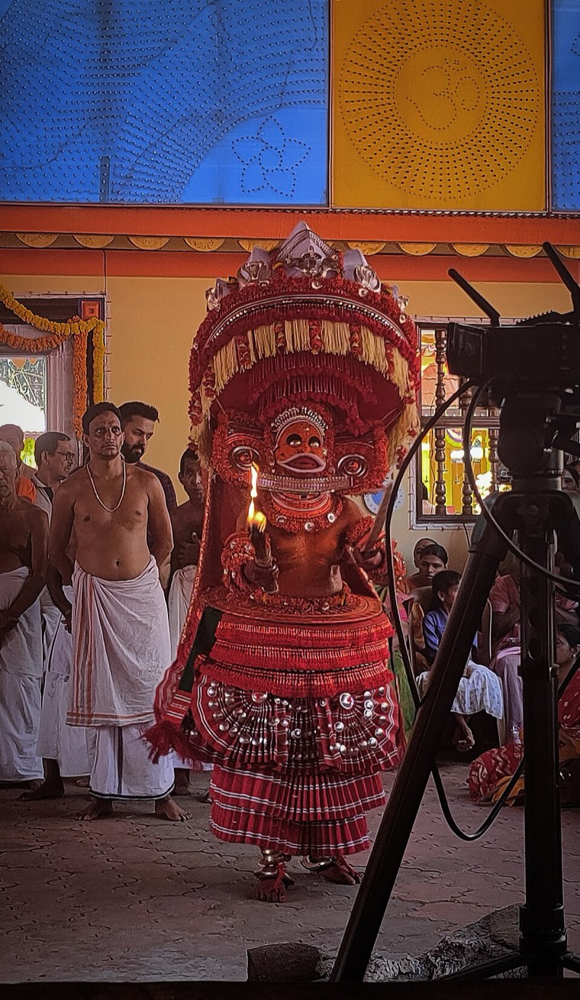
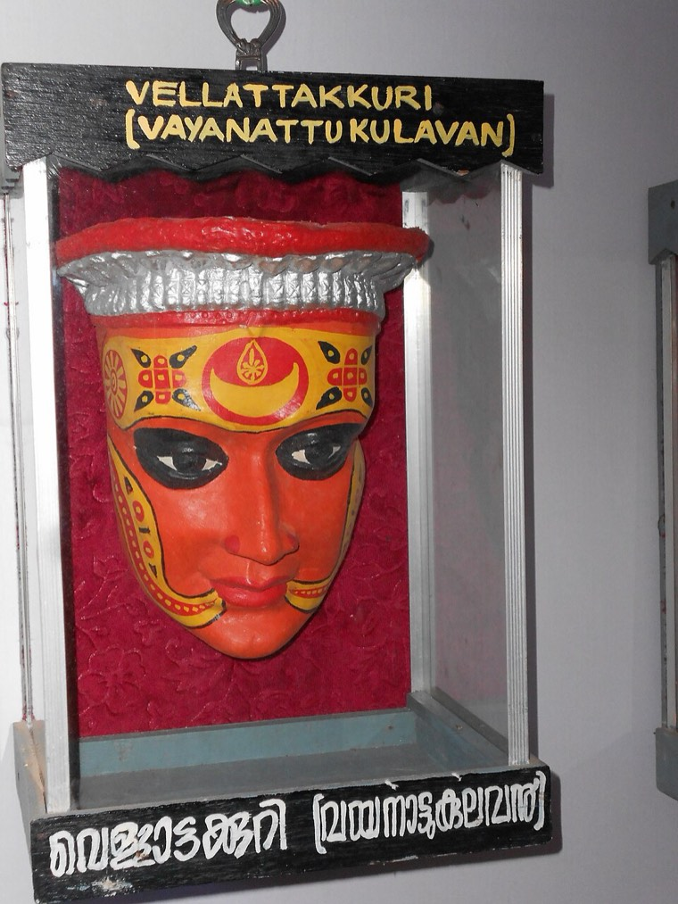
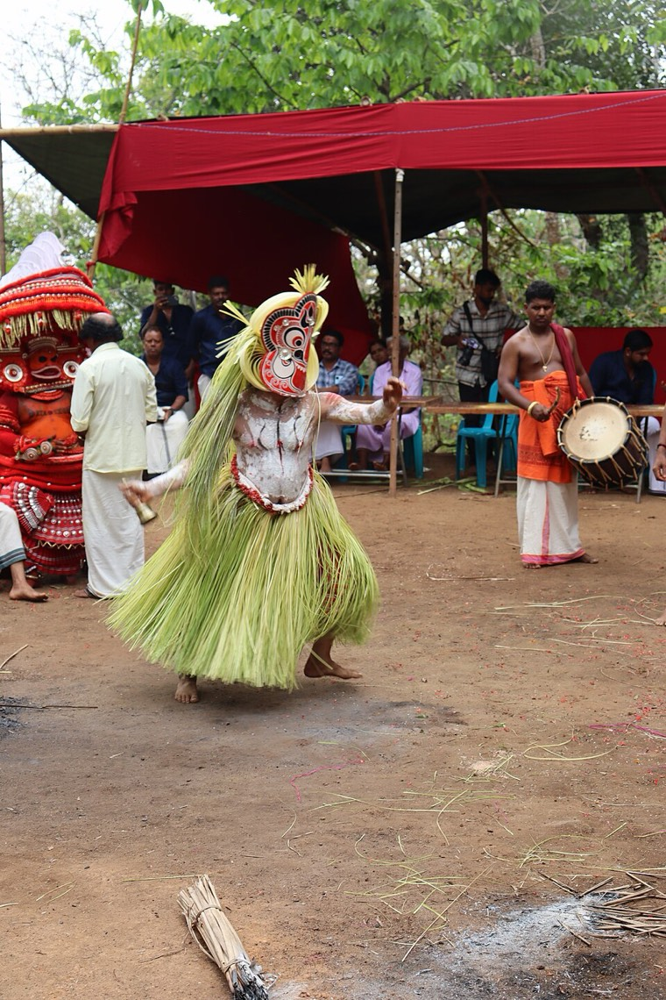
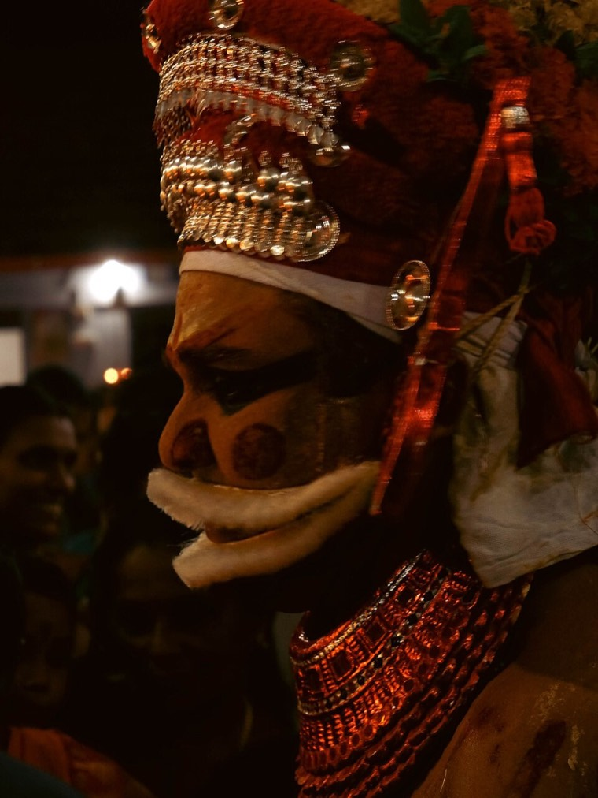
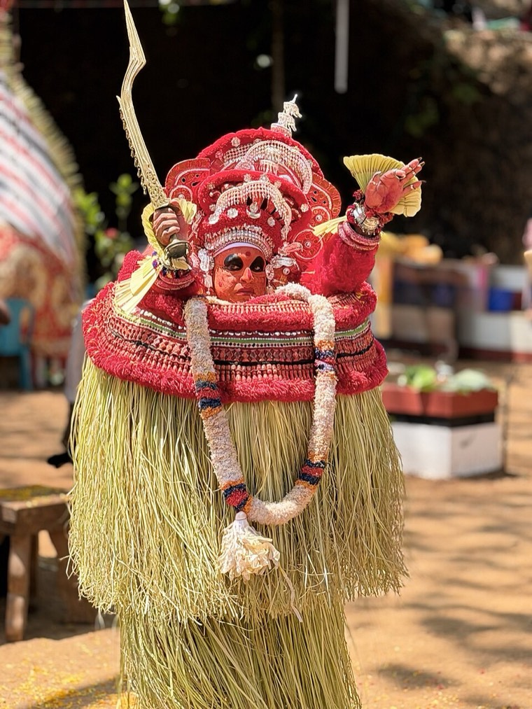
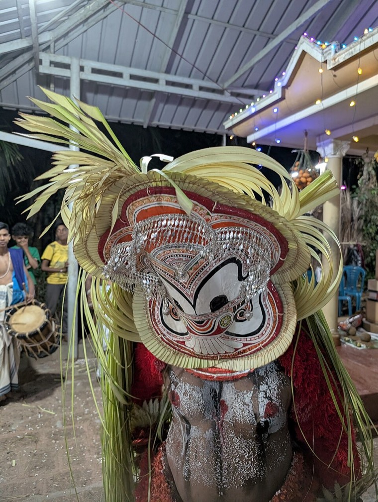
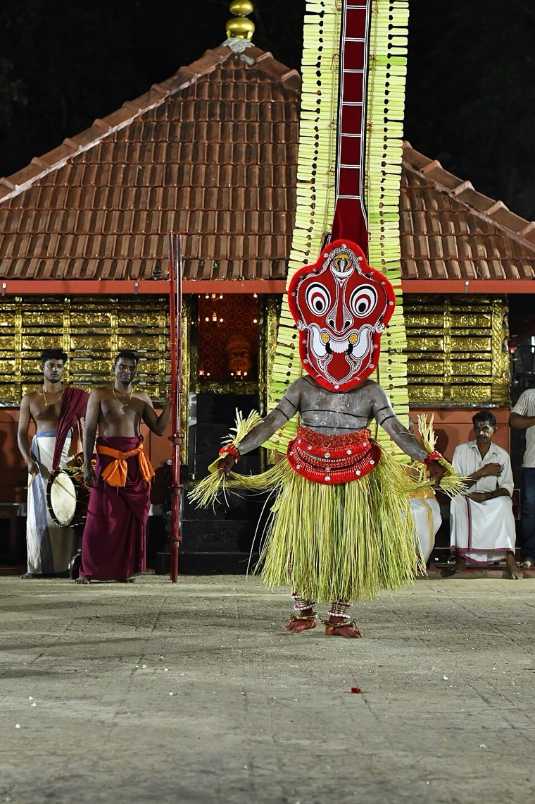

Vayanattu Kulavan
വയനാട്ടുകുലവൻ
A blind hunter god, honoured as the chief deity of many Thiyya families.
- Category
- God (hunter deity)
- Also known as
- Adhitheeyan, Thondachan
- Said to be
- A son of Shiva
- Worshipped by
- Mainly the Thiyya community
Who is Vayanattu Kulavan?
Vayanattu Kulavan is a major deity of North Malabar who appears as a hunter, and is the principal deity of many Thiyya families. Other communities also revere him. He is also called Adhitheeyan and Thondachan, which means ancestor.
The story
In the best-known telling, he is a son of Shiva, born when Shiva struck his thigh. He gathered toddy for his father, but Parvati had him sent away from heaven. On earth he drank toddy that was set aside for Shiva, and Shiva punished him with blindness. Shiva offered silver eyes and a lamp in return, but Kulavan cast them away, and where they fell, he was honoured as a god.
A second telling is about a man who strayed into a forbidden forest, became an attendant of Shiva, and was blinded after drinking the reserved toddy. In both stories the blind god is said to see people’s hearts and sorrows, and in the story of Kandanar Kelan, it is Kulavan’s bow that restores the farmer to life.


What you will see
Kulavan wears a heavy headdress made from natural materials, richly painted face art and a layered costume. The performer’s eyes are shown closed or hidden, reflecting the blind god. Before the deity appears, the performer looks into a mirror, which is the moment when the god is said to take form.
In the tradition
Performers are drawn from hereditary families. The ritual can last many hours or a full night, and the deity is honoured as the family’s central protector.
Many families treat Kulavan as their own household deity. Take your lead from the family hosting the ritual. Photography and video are not allowed at some rituals, so ask your guide first.
Quick answers
Who is Vayanattu Kulavan in Theyyam?
Vayanattu Kulavan is a major deity of North Malabar who appears as a hunter, and is the principal deity of many Thiyya families. Other communities also revere him. He is also called Adhitheeyan and Thondachan, which means ancestor.
What does Vayanattu Kulavan Theyyam look like?
Kulavan wears a heavy headdress made from natural materials, richly painted face art and a layered costume. The performer’s eyes are shown closed or hidden, reflecting the blind god. Before the deity appears, the performer looks into a mirror, which is the moment when the god is said to take form.
Learn about the Theyyams with a local guide
Our guided trips explain each deity’s story as you see it, and are planned with you on enquiry. We never publish ritual dates or venues, and confirm the right nights with you closer to travel.
Enquire about a tripSources and further reading: Kerala Folklore: Vayanattu Kulavan Theyyam, Kerala Tourism: Various types of Theyyam. Stories vary by shrine, family and teller; this is a general summary, not a definitive version.
More Theyyams

Muthappan
മുത്തപ്പൻ · Gods and guardians
The approachable grandfather god of Kannur, worshipped by people of every background.

Vishnumoorthi
വിഷ്ണുമൂർത്തി · Gods and guardians
A powerful form of Vishnu, remembered through the story of the devotee Palanthai Kannan.

Pottan
പൊട്ടൻ · Gods and guardians
The god who answered a scholar’s pride with a question about equality.

Gulikan
ഗുളികൻ · Gods and guardians
A fierce guardian linked to time, fate and Yama.